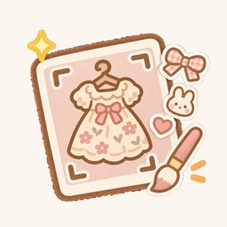
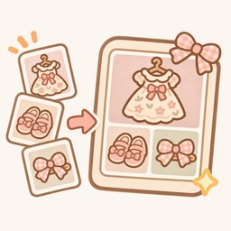
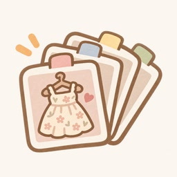
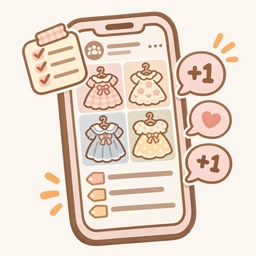
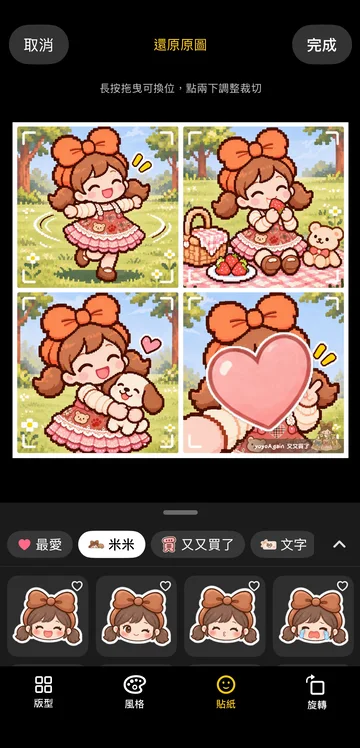
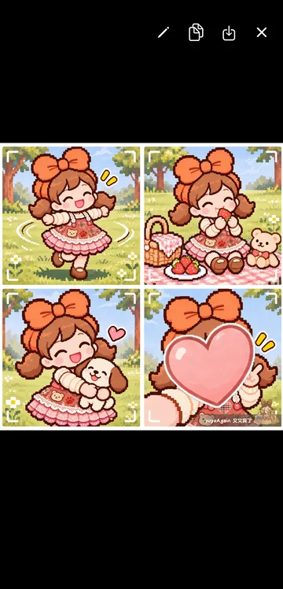
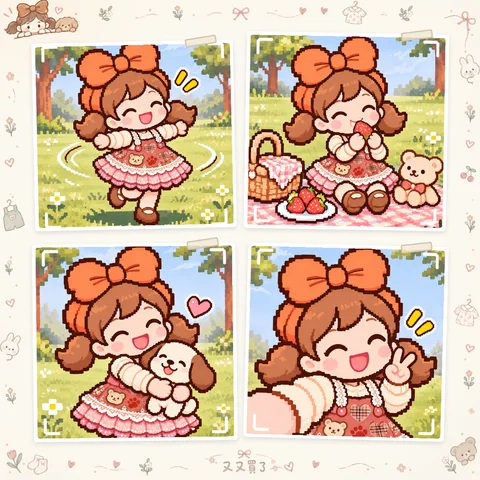
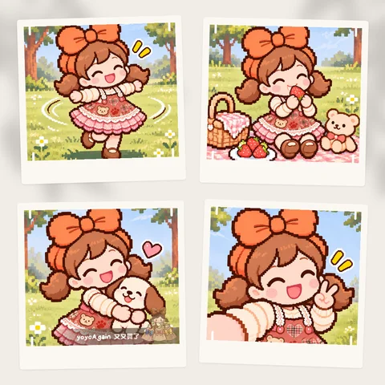
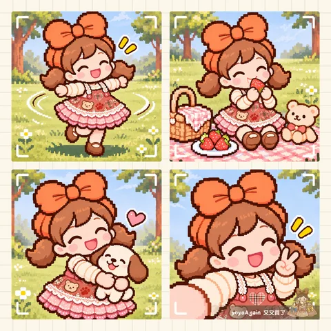
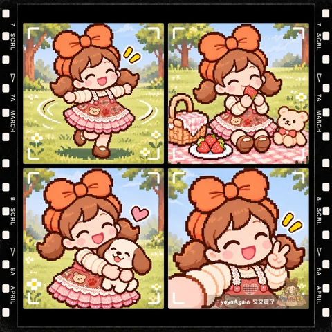

照片編輯
照片修一修
貼一貼、拼一拼
歪了想轉正、臉不想露、好幾張想拼一張？
又又買了點開照片就能弄好。

裁切、旋轉
歪的轉正，多的裁掉。

換個風格
拍立得、手帳、膠卷，或加上又又買了外框。 看有哪些風格 →
貼貼紙
遮臉、標重點都可以，近 300 張隨你貼。貼紙是 Pro 功能。 看拼圖貼貼紙 →
隨時還原原圖
原本那張一直都在，改壞了也不怕。
拼圖貼貼紙
拍再多張
拼成一張剛剛好

一次選最多 16 張
穿拍照一張張貼會洗版？選好就自動拼成一張。
每格露哪裡自己調
長按拖曳換位置，點兩下就能拖、能放大。
貼紙遮臉也可愛
小孩的臉不想露，貼一張就好。

複製好直接貼社團
也可以存進相簿。


組圖
排法、風格
隨你換




好幾種排法
上大、大圖左、雙主圖、對角⋯點一下就換。
多種風格
又又買了、拍立得、格子、手帳、奶茶色、深色、膠卷，或什麼都不加。
開樓、徵文都用得到
開樓的主視覺、徵文的封面圖，都是同一套排法和風格。 看如何開樓 →
貼紙、拼圖貼貼紙、開樓是 Pro 功能。看方案比較 →